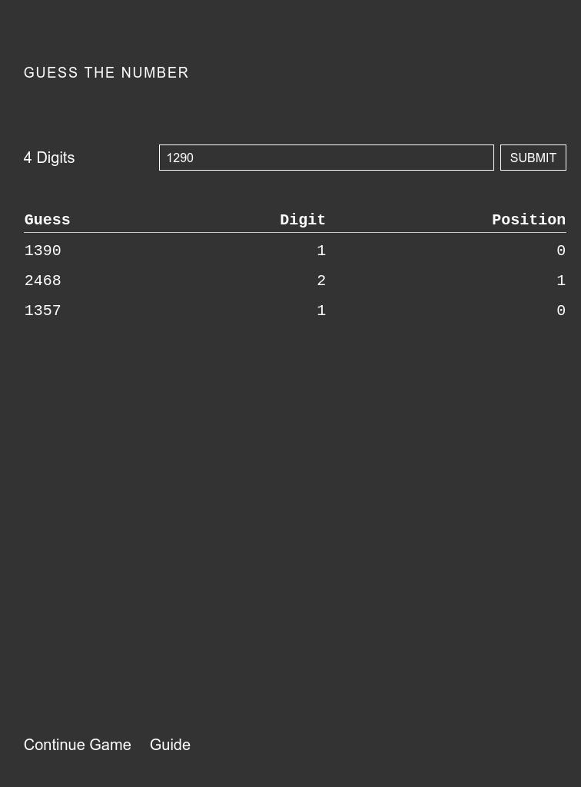
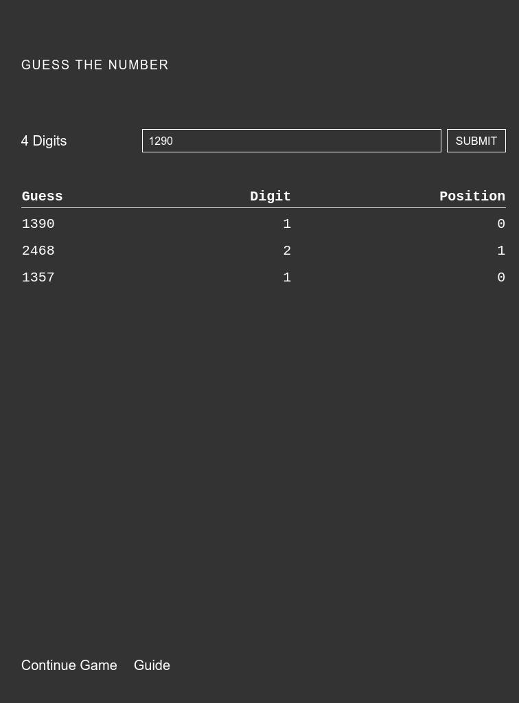

Guess the Number
View siteA single player guess the number game. This is a game I played a lot back in high school.
Implemented with Vue and Vuex. Service worker support is also added so it can be cached and then played offline.
A single player guess the number game. This is a game I played a lot back in high school.
Implemented with Vue and Vuex. Service worker support is also added so it can be cached and then played offline.
